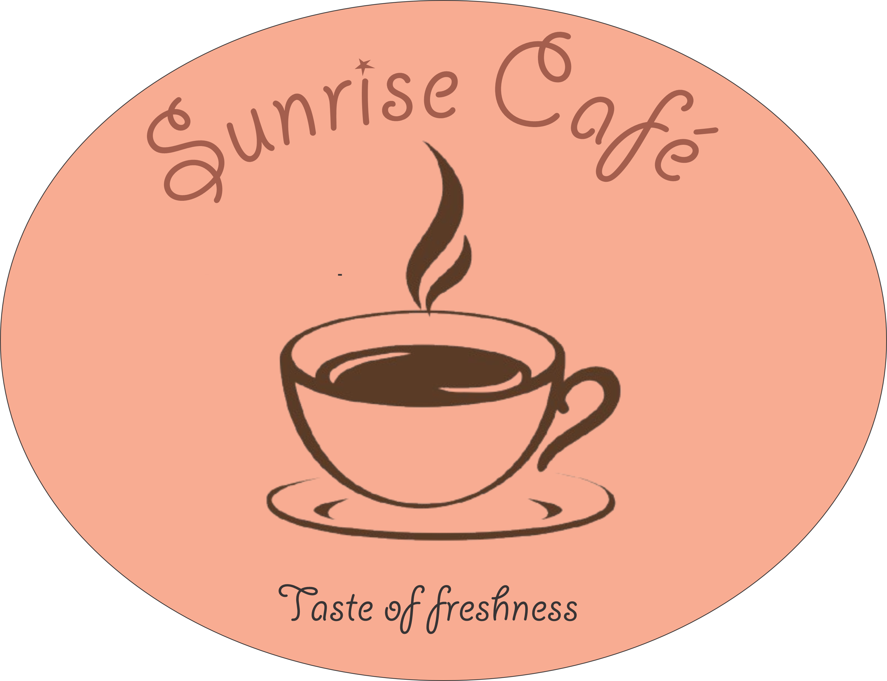

Selected Works

Brand Identity
Nexus Tech Solutions
A complete brand identity system for a technology startup, including logo, typography, and brand guidelines.

UI/UX Design
EcoTrack Mobile App
User-centered design for a sustainability tracking app with intuitive navigation and engaging visual elements.

Print Design
Art Gallery Exhibition
Poster series and catalog design for a contemporary art gallery showcasing emerging artists.

Logo Design
Sunrise Cafe
Modern logo and packaging design for a specialty coffee roaster with a focus on artisanal quality.

Illustration
Urban Wildlife Series
A collection of digital illustrations exploring the intersection of city life and natural ecosystems.

Social Media
Fitness Brand Campaign
Visual identity and social media assets for a 30-day fitness challenge campaign.